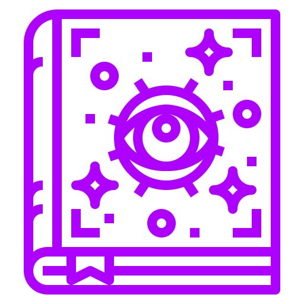
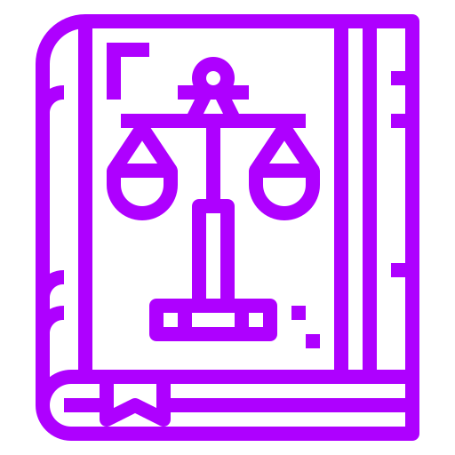

Mago
Para garantir que o mago está apto a ajudar na guerra ele terá que passar por algumas provações:
Chegou o grande dia das provações, o mago entra dentro de um templo e se depara com dois livros à sua frente, um deles, contém um feitiço muito poderoso necessário para torná-lo mais forte e o outro não. Qual ele deverá escolher ler para passar para a próxima fase?
A.
B.
